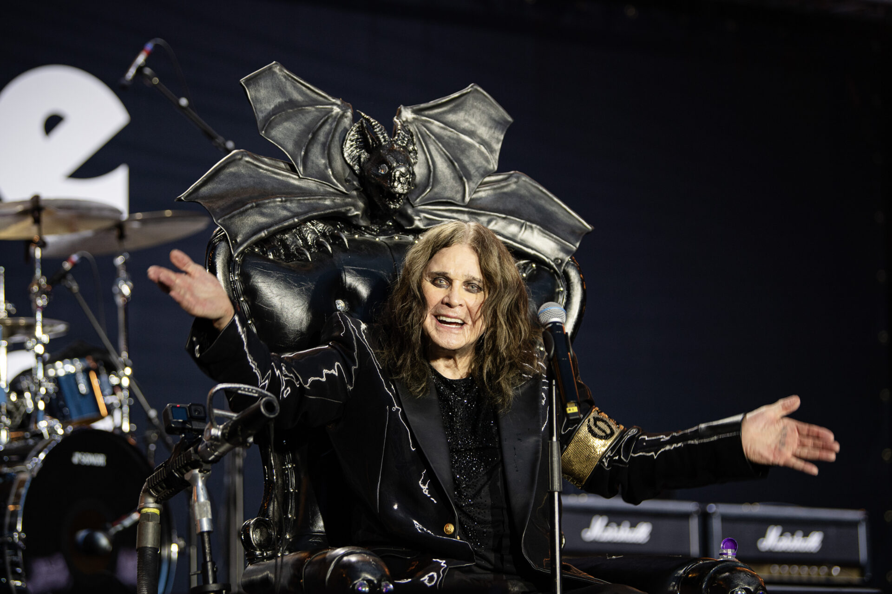

Hoje eu consegui acordar cedo, tomar um bom café e focar nos estudos. Estou aprendendo programação e estou
animada com o progresso!
O que aprendi hoje:
🌟 A unidade rem no CSS significa "root em" e é uma forma relativa de definir tamanhos — especialmente
útil
para fontes, espaçamentos, margens, paddings etc.
🌟 Como funciona a proprieda box-shadow
🌟 Utilizar a tag iframe
🌟 Conheci a propriedade resize, que é usada é usada para controlar se o usuário pode redimensionar
umelemento
🌟 Aprendi a criar formulários
A música Left on Mars, do baixista e cantor Marco Hietala, me acompanhou durante o dia.
🦇 Back to the Beginning! A festa de despedida do Black Sabbath
Hoje assisti ao vivo, online, o evento Back to the Beginning, a despedida oficial do Black Sabbath, e achei
simplesmente demais! Foi uma viagem lá na minha adolescência, quando ouvi pela primeira vez as músicas deles e
me apaixonei pelo som.
O Black Sabbath foi uma banda que marcou muito o cenário musical, influenciando uma porção de artistas e fãs
pelo mundo todo. E ver o Ozzy Osbourne cantando ao vivo, mesmo depois de tanto tempo, foi emocionante demais —
ele ainda tem aquela presença única que ninguém consegue igualar.
Quando ele começou a cantar Mama, I'm Coming Home, senti uma emoção muito forte, parecia que o tempo parou por
um momento. A voz do Ozzy, cheia de sentimento, trouxe uma mistura de nostalgia e uma espécie de despedida de
verdade, que me arrepiou até a alma.
Foi uma despedida triste, mas ao mesmo tempo incrível, porque pude relembrar todos os momentos que essa banda
me proporcionou. Foi aquela sensação boa de nostalgia e gratidão por tudo que eles fizeram pelo
rock.

🚀 See you Space Cowboy! Hoje bateu saudade do anime Cowboy Bebop!
Hoje bateu uma saudade enorme, e resolvi reassistir Cowboy Bebop. Fazia um tempo que eu não mergulhava nesse
universo, e foi como reencontrar um velho amigo.
Desde a trilha sonora marcante até os personagens cheios de camadas, tudo me prendeu de novo como se fosse a
primeira vez. A vibe melancólica, meio solitária, misturada com ação e aquela estética retrô futurista... é
algo único. Não tem jeito, esse anime sempre vai ter um lugar especial no meu coração.
Ver o Spike, a Faye, o Jet e a Ed de novo foi como revisitar um pedaço da minha memória. Cada episódio carrega
um clima diferente, mas todos têm aquela mesma alma que só Cowboy Bebop sabe transmitir.
See you, space cowboy!